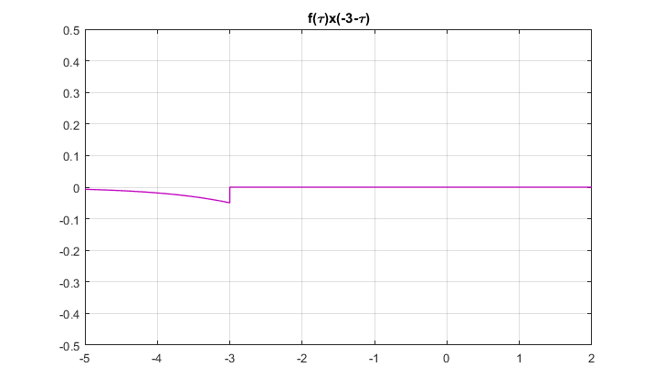
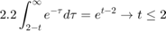
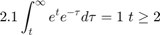
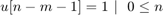
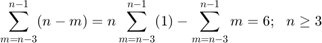

Práctica 4: Convolución y correlación
Contents
Integrantes
Barrera Bautista Luis Franciso
Pulido Morales Ingrid
Objetivos
- Conocer métodos básicos de integración numérica
- Manipulación de instrucciones en MATLAB
- Simular convoluciones y correlaciones de señales continunas
- Simular convoluciones y correlaciones de señales discretas
Introducción
Convolución para Señales Sontinuas
La convolución se denota como:
Métodos
- Método Analítico
Se tienen dos funciones:
Entonces
Realizando las integrales

- Método Gráfico (límites de integración)
Se tienen dos funciones:
-Pasos para realizar convoluciones
1. Seleccionar una de las dos señales para graficar con el argumento
2. La segunda señal se grafica con el argumento
3. En la segunda señal, para cada valor horizonttal de cambio de geometría se suma la variable
4. Se traslada la segunda señal mediante la variable hasta que no sea cero
5. Mediante el paso anterior se eligen los valores de para realizar la integral
6. Se anota el intervalo de para los cuales los pasos 4 y 5 son válidos
7. Se repiten los pasos 4 y 5 hasta que tome todos los valores reales
Entonces





Paso 5
Paso 5'
Paso 6
Paso 6'
Correlación para señales contitnuas
Existen 3 formas de hacer correlación
Ejemplo por convolución
Resolviendo por cualquier método de convolución
Ejemplo con el método (1)
Con las mismas gráficas del ejemplo pasado

Finalmente
Ejemplo con el método (2)

Por lo tanto, se obtiene el mismo resultado.
Convolución para señales discretas
Se obtiene con la siguiente formula
- Método Analítico
Se tienen las siguientes gráficas

Por lo tanto
- Método Gráfico
De manera similar que en continuas, se tienen 7 pasos
1. Dibujar f[m]
2. dibujar g[m]
3. Agregar "+n" en cada cambio de fórmula de g[-m]
4. Se traslada la señal g[-m] de tal manera que se obtenga f[m]g[n-m]
5. De la geometría del paso anterior, encontrar los valores de m
6. Se encuentras los valores de n de tal manera que el paso anterior sea válido
7. Se repiten los pasos 4 y 5 hasta que tome todos los valores enteros
Paso 1
Límites
Paso 2

Paso 3
Finalmente
Correlación en señales discretas
Se tienen 3 formas
Resolveremos por el método (3)
Se tienen las siguientes señales
Paso 1.
Resolviendo por cualquiera de los dos métodos antes mencionados de convolución
- Método de la cinta
Con estas señales
Desarrollo
Punto 1
problema1
Resultado analítico
Punto 2
problema2
Resultado analítico
Punto 3
- Problema 3.1.1
Simulación de la correlación de las señales (c) con (d)
Punto 4
- Problema 3.1.1
Simulación de la correlación de las señales (c) con (d)
Punto 5
- Problema 3.1.1
Utilizando el comando "conv" de MATLAB, se calcula la convolución de las señales (c) y(d)
figure x=[0 -9 -6 -3 0 3 6 9 0 0]; h=[0 4 2 0 2 4 0 0 0 0]; n=-4:5; subplot(3,1,1); stem(n,x); xlabel('n'); ylabel('x[n]'); subplot(3,1,2); stem(n,h); xlabel('n'); ylabel('h[n]'); n=(0:1:length(x)+length(h)-2); subplot(3,1,3); c=conv(x,h); stem(n,c,'k'); grid on title('conv(x,h)') xlabel('n'); ylabel('y[n]');

Bibliografía
B. P. Lathi. (2005). Linear Systems and Signals. Oxford, EE. UU.: Oxford University Press. Martinez, M. Rafael. (2018). Correlación y convolución de señales continuas y discretas. 2018, de Mate y así Sitio web: https://www.youtube.com/user/rafa5131